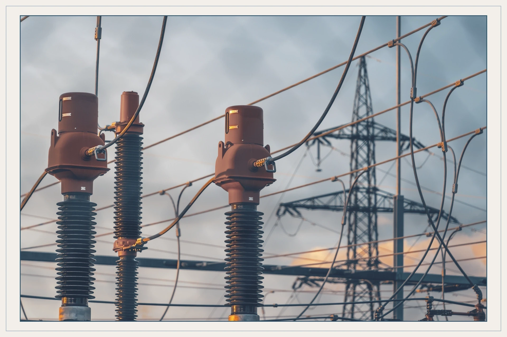
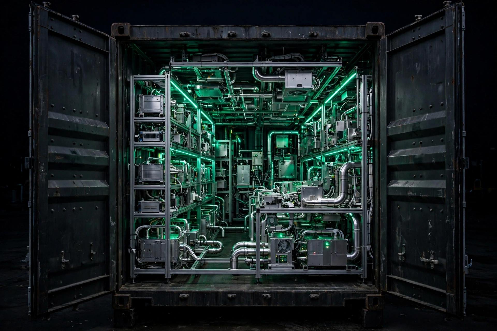

On October 27, 2026, NVIDIA and Oracle announced plans to expand Oracle Cloud Infrastructure Superclusters with NVIDIA Vera Rubin NVL72 systems to multi-gigawatt scale, supporting growing customer demand for AI training, inference, and agentic applications. The same announcement brings the NVIDIA Vera CPU to Oracle Cloud Infrastructure. The unit of measure is the headline: data centres were once counted in racks, then in megawatts, and now the serious planning number is the gigawatt.
One week earlier, Google Cloud and NVIDIA announced general availability of NVIDIA Vera Rubin infrastructure, with expansion to Europe planned, so the same platform is arriving on multiple clouds at once. That simultaneity matters for operators. A platform that lands in several places at the same time becomes a standard to learn, a supply chain to plan around, and a set of operating habits that can travel from one fleet to another instead of being relearned site by site.
We read announcements at this scale as operations documents. Behind the headline sit substations, cooling plants, network fabrics, schedulers, and failure drills, and those unglamorous layers decide whether capacity on paper becomes answers in production. The gigawatt is a power number, but the achievement the number points at is organisational: many teams, many systems, and one discipline holding the whole factory together.
01 · The announcement
The announcement pairs scale with availability. Plans to expand to multi-gigawatt scale describe the direction, while the arrival of the Vera CPU on OCI and the earlier general availability of Vera Rubin infrastructure describe the present tense. Reading both parts together keeps the story honest: a roadmap measured in gigawatts, and hardware that customers can begin using while the larger build-out proceeds.
The pairing of GPU systems with a dedicated CPU line also reflects how agentic work actually runs. Agents spend part of each task calling models and part of each task executing tools, testing code, and retrieving data between model calls. Infrastructure sized for both halves of that loop, model work and the work around model work, matches the shape of production demand better than infrastructure sized for training alone.

02 · A city's worth of power
The word gigawatt does quiet work in that headline. A gigawatt is roughly the demand of a mid-sized city. Planning AI capacity at that scale turns a data centre project into an energy project: land near substations, cooling at industrial scale, and grid agreements signed years ahead. The building becomes a power project first and a computer project second; sites, substations, and cooling form the critical path, while the racks become the comparatively easy part.
NVIDIA DSX POD, presented at GTC Berlin, attacks the other end of the same problem: complete Vera Rubin AI factories assembled and tested inside containers by 17 partners, cutting on-site deployment from as much as six months to as little as 14 days once a site is ready, with deliveries expected from early 2027. The pattern is consistent: the industry is industrialising the factory itself, moving assembly and testing upstream so that a prepared site receives something closer to a product than a construction project.
An agent is only as reliable as the fleet underneath it, and a fleet is only as good as the discipline running it.
03 · Inference is the main event
Training built the first AI factories. Inference fills them. An agent that answers questions, checks systems, and acts on instructions all day consumes serving capacity continuously, not in bursts. Announcements that size infrastructure for training, inference, and agentic applications in one breath mark the shift: fleets are now designed for models that work, not only for models that learn.

Continuous demand changes the economics as well as the engineering. A fleet serving agents all day earns its keep through utilisation, and utilisation is an operations outcome: scheduling that keeps accelerators busy, interconnects that stay healthy under load, and capacity planning that matches the rhythm of real workloads. Inference at scale rewards the same discipline that training does, but the reward shows up every hour rather than at the end of a training run.
04 · Operations is the discipline
At gigawatt scale, small inefficiencies become large bills and small outages become public events. Utilisation, scheduling, interconnect health, and failure drills decide whether the capacity on paper becomes answers in production. That is why operations exists as a certified discipline: NVIDIA-Certified Professional: AI Operations is part of the team record at Ovia, and why context engineering and agent design sit on top of operations. An agent is only as reliable as the fleet underneath it, and a fleet is only as good as the discipline running it.
The pattern is familiar from smaller scales, and the field years teach the same lesson in every era. At Staywired from 2014 to 2022 and at Beanfield from 2011 to 2013, infrastructure held when the kit at the edge matched the plan at the core. Gigawatt factories raise the stakes without changing the principle: preparation, measurement, and rehearsed response are what separate capacity from reliability, at any scale.
05 · What to watch
Three signals will show whether the gigawatt era arrives on schedule: whether the multi-gigawatt OCI expansions move from announcement to energised sites; whether containerised AI factories ship from early 2027 as planned; and whether inference economics, cost per answered question and per completed task, keep falling as Vera Rubin capacity lands. Energised sites are the hardest signal to fake, because power either flows or the power does not flow.
The direction is set. The craft now is execution. We will keep watching the energised sites, the container deliveries, and the cost curves, because those are the places where an announcement becomes an industry. When the factory is measured in gigawatts, operations stops being a support function and becomes the story itself.
References
- NVIDIA Newsroom — “NVIDIA and Oracle Expand NVIDIA Vera Rubin to Multi-Gigawatt Scale and Bring NVIDIA Vera CPU to Oracle Cloud Infrastructure”, October 27, 2026: https://investor.nvidia.com/news/press-release-details/2026/NVIDIA-and-Oracle-Expand-NVIDIA-Vera-Rubin-to-Multi-Gigawatt-Scale-and-Bring-NVIDIA-Vera-CPU-to-Oracle-Cloud-Infrastructure/default.aspx
- Oracle — “NVIDIA and Oracle Expand NVIDIA Vera Rubin to Multi-Gigawatt Scale and Bring NVIDIA Vera CPU to Oracle Cloud Infrastructure”, October 27, 2026: https://www.oracle.com/ca-en/news/announcement/ai-world-nvidia-and-oracle-expand-nvidia-vera-rubin-to-multi-gigawatt-scale-2026-10-27/